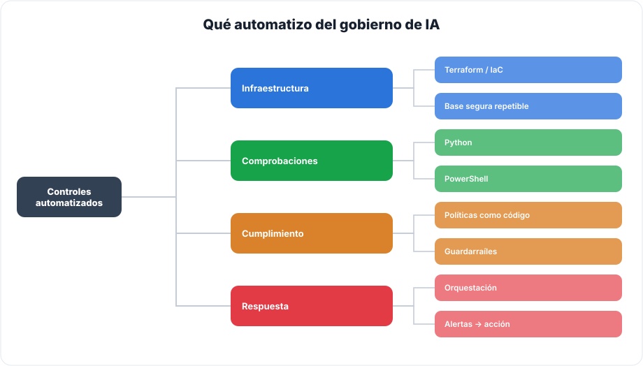
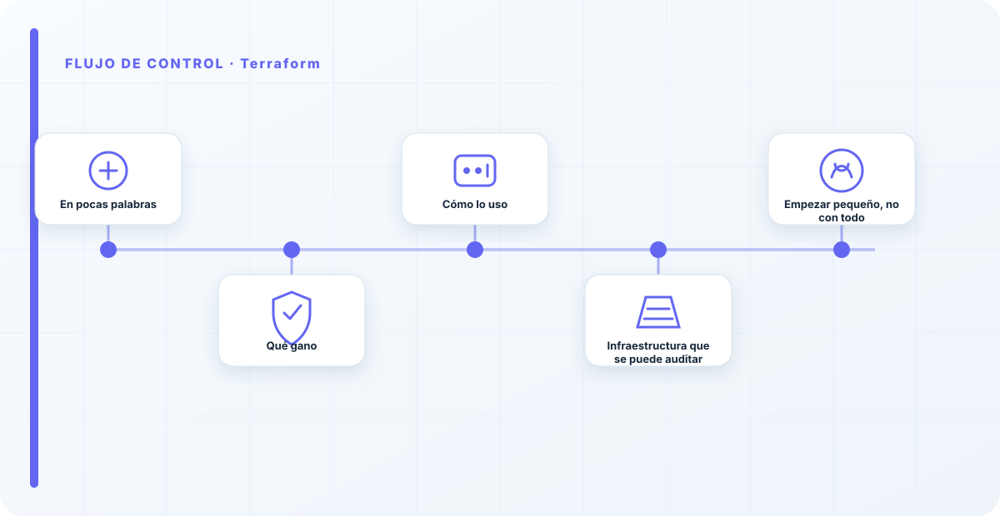
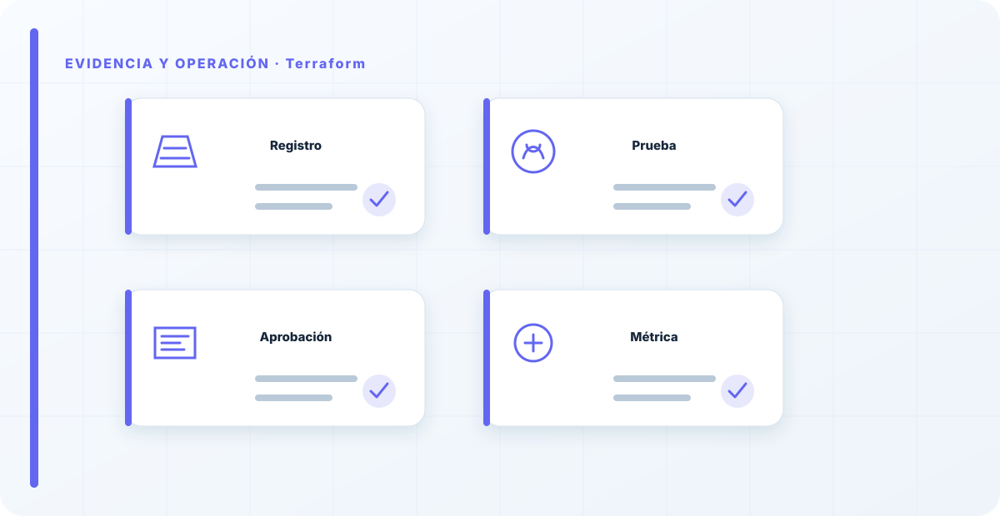

En pocas palabras
Montar la infraestructura de IA a clics es condenarse a repetir errores y a no poder auditarlos. Con infraestructura como código —Terraform— la base segura de tus despliegues de IA se define una vez, se revisa como cualquier código y se despliega igual siempre. Es la diferencia entre "creo que está bien configurado" y "aquí está, escrito, versionado y revisable". La base segura no debería ser un acto de memoria de quien la montó.
Qué gano
El entorno de IA se define una vez con su base de seguridad —red privada, cifrado, accesos mínimos, registro— y se despliega idéntico cada vez, sin configuraciones manuales que nadie recuerda ni puede reproducir. Y como es código, se revisa antes de aplicarse, se versiona y se audita.

Esto elimina de golpe una familia entera de incidentes: los del "se me olvidó activar el cifrado en este entorno" o "este despliegue quedó con el acceso abierto porque lo montó otra persona". Si está en el código, está en todos los despliegues; si no, en ninguno.
Cómo lo uso
Defino una base segura por defecto para los despliegues de IA y controlo la deriva: que nadie cambie a mano lo que el código fijó. Es la forma de que la seguridad cloud sea consistente y no dependa de quién despliega ni de si tuvo un buen día.
La deriva es el enemigo silencioso: alguien "toca una cosita" a mano para salir del paso, y el entorno real deja de parecerse al código. Detectarla y corregirla es parte del trabajo, no un extra.

Infraestructura que se puede auditar
Una ventaja que se valora tarde: un entorno definido como código es auditable de un vistazo. En vez de conectarte a cada sistema a comprobar cómo está configurado, lees el código y lo sabes. Y el historial de cambios te dice quién cambió qué y cuándo, que es justo lo que un auditor —o tú, tras un incidente— necesita.
La infraestructura a clics es una caja negra que hay que inspeccionar sistema a sistema; la infraestructura como código es un documento que se lee. Para gobernar, esa diferencia es enorme.
Empezar pequeño, no con todo
No hace falta migrar toda la infraestructura a código de golpe; eso paraliza y nunca arranca. Empiezo por definir la base segura de un despliegue nuevo de IA —red, cifrado, accesos, registro— y a partir de ahí lo replico. Cada despliegue que nace ya como código es uno menos montado a mano, y el patrón se reutiliza.
Lo viejo montado a clics se va migrando cuando toca tocarlo, no en un big-bang traumático. La infraestructura como código se adopta por acumulación, empezando por lo nuevo y arrastrando lo viejo poco a poco. El objetivo es la dirección, no convertirlo todo el primer día.
Cada vez que veo infraestructura de IA montada a clics, veo un entorno que nadie puede reproducir ni auditar, y donde la seguridad depende de que quien lo montó se acordara de todo. Terraform convierte "creo que está bien configurado" en "aquí está, escrito y revisable". La base segura no debería ser un acto de memoria, sino de código.
Los errores que veo una y otra vez
- Montar el entorno de IA a mano.
- Configuraciones que nadie puede reproducir.
- No controlar la deriva de configuración.
- No versionar ni revisar la infraestructura.
- Que la seguridad dependa de quién despliega.
Cómo lo llevaría a un entorno real
Cuando aterrizo terraform en una organización, no empiezo por comprar una herramienta ni por redactar veinte páginas. Empiezo por dibujar qué ocurre hoy: quién solicita el cambio, quién lo aprueba, qué sistemas intervienen, qué datos cruzan el proceso y quién se entera cuando algo falla. Ese dibujo suele descubrir más problemas que cualquier checklist. En automatización, lo peligroso no es solo carecer de controles; también lo es creer que existen porque alguien los escribió una vez.
Después separo lo imprescindible de lo deseable. Lo imprescindible debe poder comprobarse: un responsable identificado, una regla clara, una evidencia fechada y un mecanismo para reaccionar. En este caso revisaría especialmente módulos Terraform, estado y plan. No me vale una respuesta del tipo «lo gestiona el proveedor» o «eso lo mira seguridad». Necesito saber qué persona toma la decisión, con qué información y dentro de qué plazo.
La implantación debe crecer con el riesgo. Un piloto interno puede funcionar con una ficha breve y una revisión manual. Un sistema que afecta a clientes, empleados, dinero o información sensible necesita segregación de funciones, pruebas independientes, monitorización y un expediente mantenido. Mi criterio es sencillo: cuanto más difícil sea deshacer el daño, más fuerte debe ser la barrera antes de producción.
Decisiones que deben quedar por escrito
Hay decisiones que no deberían vivir en una reunión ni en un mensaje de chat. Para terraform dejaría documentados el alcance, los supuestos, los límites de uso, las excepciones aceptadas y las condiciones que obligan a detener o reevaluar. El documento no tiene que ser enorme, pero sí debe permitir que otra persona entienda por qué se hizo lo que se hizo.
También registraría quién puede cambiar políticas, quién valida despliegue y quién recibe las alertas relacionadas con drift. Cuando esas tres responsabilidades se mezclan, aparece el clásico problema: el mismo equipo construye, aprueba y declara que todo funciona. No siempre se puede separar por completo, sobre todo en organizaciones pequeñas, pero al menos debe existir una revisión por alguien que no dependa del éxito inmediato del despliegue.
Las excepciones merecen un tratamiento propio. Una excepción sin fecha de caducidad acaba convirtiéndose en la arquitectura real. Por eso exigiría motivo, riesgo aceptado, responsable, compensaciones, fecha de revisión y criterio de cierre. Si falta uno de esos elementos, no es una excepción gestionada; es una deuda invisible.

Un ejemplo práctico
Imaginemos que un equipo quiere incorporar terraform a un servicio que ya está en producción. La propuesta promete reducir tiempos y automatizar tareas, pero utiliza componentes que cambian con frecuencia. Antes de aprobarlo, pediría una prueba limitada, un inventario de dependencias, un flujo de datos y una definición clara de qué acciones quedan fuera del alcance.
Durante la prueba recogería resultados normales y casos límite. No solo miraría si funciona; comprobaría qué ocurre cuando faltan datos, cambia una versión, se pierde conectividad, llega una entrada manipulada o un usuario intenta superar sus permisos. Ahí es donde se ve si el diseño aguanta. En muchas pruebas felices todo parece seguro porque nadie ha intentado romper la hipótesis de partida.
Si los resultados son aceptables, la salida a producción tendría condiciones: versión fijada, configuración aprobada, logs disponibles, responsables de guardia, procedimiento de rollback y revisión tras las primeras semanas. Si alguno de esos elementos no existe, prefiero retrasar el despliegue. Un día de demora suele ser más barato que investigar después un comportamiento que nadie puede reconstruir.
Qué evidencias guardaría
Para demostrar que el control funciona conservaría evidencias que cuenten una historia completa, no capturas sueltas. La historia debe enlazar necesidad, decisión, implementación, prueba y operación. En terraform eso incluye como mínimo la ficha del activo, el diagrama vigente, la configuración aprobada, el resultado de las pruebas y el registro de cambios.
No guardaría información por acumular. Si los logs contienen prompts, documentos, datos personales o secretos, aplicaría minimización, control de acceso y retención. La evidencia debe ayudar a investigar y auditar sin crear una segunda fuga de información. Es frecuente endurecer el sistema principal y dejar un repositorio de evidencias abierto a demasiadas personas.
- Propietario y finalidad de terraform, con fecha de revisión.
- Inventario de módulos Terraform, estado y dependencias asociadas.
- Criterios de aceptación y resultados sobre plan y políticas.
- Configuración efectiva, versión y aprobación del cambio.
- Alertas, incidentes, excepciones y acciones correctivas cerradas.
Señales de que el control no está funcionando
El primer síntoma es que nadie sabe responder con rapidez quién es el responsable. El segundo es que la documentación describe una versión distinta de la que está operando. El tercero es que las alertas existen, pero llegan a un buzón que nadie revisa. Cuando aparecen esos tres síntomas, el problema no es tecnológico: el control se ha desconectado de la operación.
También desconfío de las métricas demasiado perfectas. Cero incidentes, cero excepciones y cien por cien de cumplimiento pueden significar excelencia, pero con frecuencia significan que no estamos mirando. Prefiero indicadores que enseñen tendencia: tiempo de corrección, antigüedad de excepciones, cobertura de pruebas, cambios sin revisión y reincidencias.
Por último, revisaría el comportamiento después de cada cambio significativo. En IA, una actualización de modelo, dataset, prompt, herramienta, permiso o proveedor puede alterar el riesgo sin cambiar el nombre del servicio. Si el proceso solo reevalúa cuando se crea un proyecto nuevo, se quedará ciego durante la mayor parte de la vida útil.
Mi criterio de cierre
Considero que terraform está razonablemente controlado cuando el equipo puede explicar el proceso sin depender de una sola persona, reconstruir una decisión con evidencias y detener el servicio sin improvisar. No busco perfección documental; busco que la organización pueda tomar decisiones repetibles bajo presión.
El cierre no consiste en marcar todas las casillas. Consiste en demostrar que los riesgos relevantes tienen propietario, que los controles se prueban y que las desviaciones producen una acción. Si la evidencia no cambia ninguna decisión, probablemente estamos generando burocracia. Si una decisión importante no deja evidencia, estamos creando fragilidad.
Este enfoque es el que intento mantener en toda CyberLibrary AI: explicar el control de forma que lo entienda negocio, pero con suficiente profundidad para que arquitectura, seguridad, auditoría y operaciones puedan aplicarlo de verdad.
Referencias y marcos relacionados
Contenido educativo y técnico. No sustituye asesoramiento jurídico ni una auditoría formal.